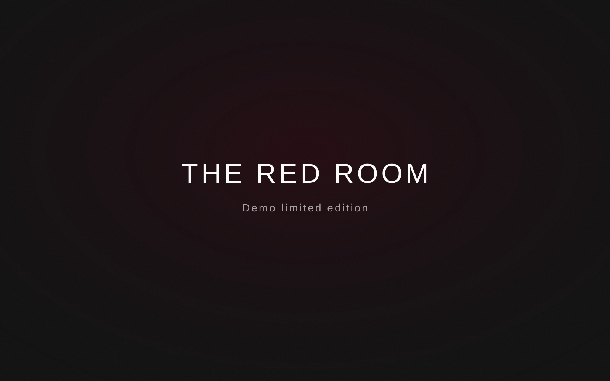

THE RED ROOM
Demo Artist

Об издании
Демонстрационная карточка альбома. Здесь можно указать год, страну, лейбл, каталожный номер, состояние носителя и дату приобретения.
Трек-лист
- First Track
- Second Track
- Third Track
- Fourth Track
Заметка
Добавьте историю покупки, впечатления от мастеринга или сравнение с другим изданием.
← Назад к коллекции